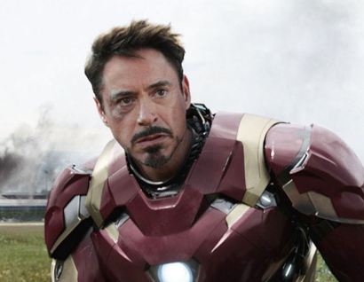
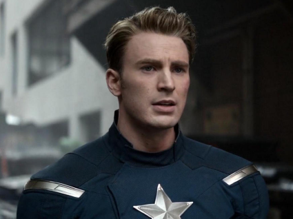
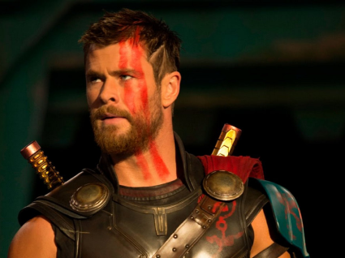
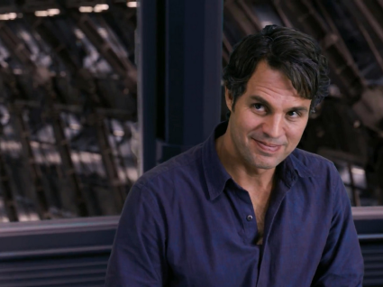

Железный человек – Тони Старк
Энтони Эдвард «Тони» Старк – молодой и эксцентричный наследник своего отца и огромной корпорации “Старк Индастриз”. Миллиардер и гений. Разработал сам уникальный костюм Железного человека.

Капитан Америка – Стивен Роджерс
Стивен или “Стив” Грант Роджерс – успешный испытуемый сыворотки Суперсолдата, которую разработал доктор Эрскин во времена второй мировой войны. Стив отличается высокой маралью и непревзойденными волевыми качествами. Главной особенностью его экипировки является щит, созданный из очень редкого и прочного сплава, который не подчиняется законам физики.

Тор - Крис Хемсворт
Тор или Могучий Тор – герой с планеты Асгард, сын великого Одина. Всегда отличался смелостью и отвагой. Верным спутником Тора был его молот Мьёльнир, который сам прилетает к нему, стоит лишь Богу Грома протянуть руку. В последних фильмах Марвел мы видим резкое преображение Тора, как во внешности, так и в характере. Его новым оружием становится Гром-секира.

Халк – Брюс Бэннер
Доктор Роберт Брюс Беннер – признанный во всем мире ученый в области биохимии, ядерной физики и гамма-излучений. В попытках воссоздать сыворотку Капитана Америка, он превращается в огромного, неуправляемого и злого монстра зеленого цвета, который получает прозвище Халк. Позже Брюс проводит целую череду экспериментов, которая позволяет ему, как он выразился: “взять лучшее от обоих”.